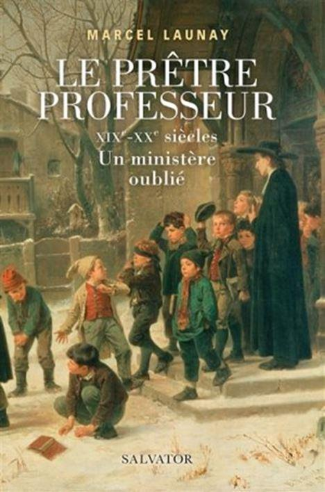
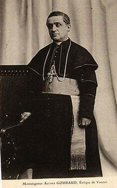
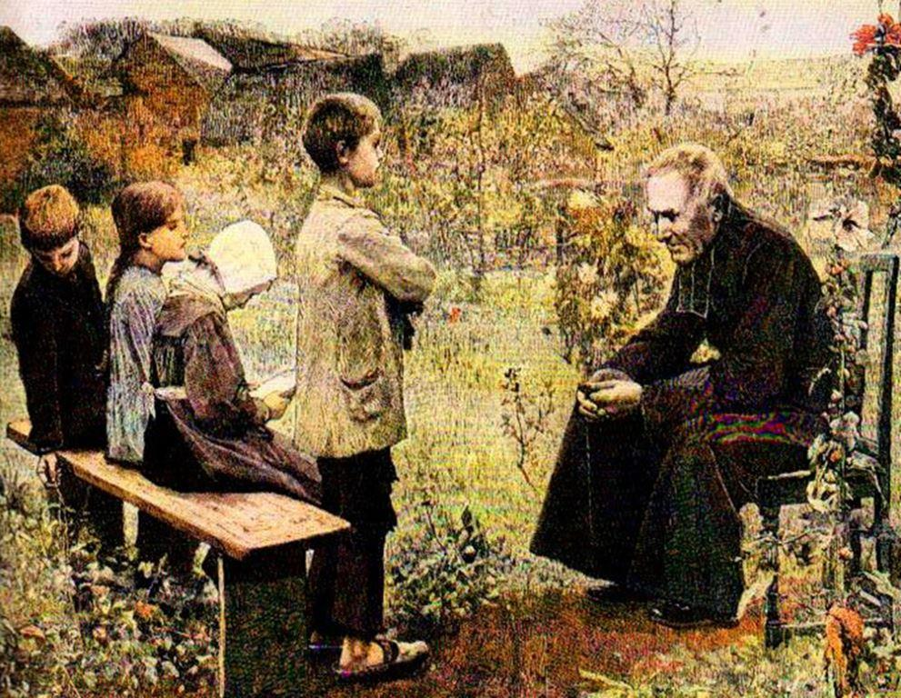

Marcel Launay, professeur émérite à l’université de Nantes, a enseigné l’histoire de l’Église au séminaire interdiocésain des Pays de la Loire. Avec ce nouvel ouvrage intitulé Le prêtre professeur, il revient avec pédagogie sur Un ministère oublié aux XIXe - XXe siècles.
Certains oublient trop souvent que « L’Église de France à l’époque contemporaine a réalisé un investissement humain et pédagogique considérable dans le domaine de l’éducation à tous les niveaux, primaire, secondaire, supérieur ». Launay le rappelle dès les premières lignes de son intéressant livre, comme pour signifier qu’il s’agit d’une erreur de vouloir opposer l’Église et le savoir ou l’Église et l’enseignement. J’en veux pour preuve le nombre de savants et de scientifiques catholiques qui marquent de leurs empreintes l’Histoire.
Pendant de nombreuses années « l’école chrétienne a paru longtemps être la seule école possible pour les fidèles ».
Il faut prendre le temps de (re)lire Divini illius Magistri, du Pape Pie XI, publiée le 31 décembre 1929 pour comprendre cette légitime position. Cette grande encyclique aborde les thèmes majeurs de l'éducation chrétienne de la jeunesse et enseigne qu’il existe trois institutions - la famille, la société civile et l’Église - concourant à l’éducation chrétienne. Dans le même ordre d’idée, il semble très loin le temps où les catholiques prenaient en considération le Code de droit canonique de 1917 qui détermine le principe suivant : « La fréquentation des écoles non catholiques ou neutres ou mixtes doit être interdite aux enfants catholiques ». Chacun sera libre de déterminer si l’Église, dans son infinie sagesse, avait raison ou tort de se positionner de cette manière…
En 1906, alors que la République combat encore l’Église catholique, l’évêque de Vannes Monseigneur Gouraud prenait la plume pour exposer des vérités historiques délaissées voire combattues : « Ce furent surtout les hommes d’Église qui furent les instituteurs de l’enfance. Au XIXème siècle les prêtres comprirent qu’ils avaient à reprendre, en cela comme dans le reste, les traditions de l’Église. L’Église a toujours cru qu’elle pouvait utiliser le ministère de prêtres pour l’éducation de la jeunesse ». N’oublions pas le contexte : les congrégations vivaient un nouvel exil imposé par la répression juridique républicaine. Ainsi, il convenait que « le relais soit pris par le clergé diocésain ».
Launay estime que ce ministère « s’inscrivait dans la fonction du sacerdoce » comme Pie XI le formula avec l’encyclique Ad catholici sacerdotti du 20 décembre 1935.
Nous lisons avec attention cet énoncé fondateur : « Le prêtre doit posséder pleinement la doctrine de la foi et de la morale catholique. Il doit savoir la proposer, il doit savoir rendre raison des dogmes, des lois, du culte de l’Église dont il est le ministre ; il doit dissiper l’ignorance qui, malgré les progrès de la science profane, enténèbre en matière de religion l’esprit de tant de nos contemporains ». L’auteur pose cette question pertinente : « Qui mieux que le prêtre professeur pouvait répondre à cette exigence ? »
De fait, cette étude retrace l’histoire d’« un ministère oublié », celui des prêtres professeurs, mais ô combien précieux pour la formation intellectuelle de la jeunesse. Nous citons avec confiance cette analyse pleine de bon sens : « Une histoire de l’enseignement en France et particulièrement de l’enseignement catholique ne peut négliger leur rôle dans leurs divers ministères dont le souvenir s’estompe progressivement avec la disparition de leurs anciens élèves ou étudiants ». Nous ajoutons avec conviction que l’abandon des principes intemporels conduit inévitablement à cet assèchement spirituel et intellectuel déploré par les esprits les plus lucides.
D’une manière générale, certains pourraient être tentés de dire : pour quelles raisons faudrait-il se pencher sur le prêtre professeur ? Nous laissons la parole à l’auteur : « A l’heure où l’on constate sa disparition presque totale de l’enseignement avec la nécessité voulue ou subie de la décléricalisation de l’école catholique, il paraissait nécessaire de brosser un tableau plus serein de son mode de vie, de son action, tant pédagogique que religieuse, et des limites de celle-ci ». Il précise également que « l’Église a longtemps consacré une partie des forces vives du clergé à l’encadrement de la jeunesse au nom de sa mission d’évangélisation ». À partir des années 60, marquées entre autres par les événements de Mai 68 et le Deuxième Concile du Vatican, Launay pense qu’ « un monde s’en est allé, celui des soutanes, qui a marqué des générations d’élèves ou d’étudiants ». Il a malheureusement raison…
Ce livre permet d’aborder sous un autre angle les rapports de l’Église avec les différents régimes politiques que la France a connus en deux cents ans. Il offre aussi la possibilité de comprendre les échanges - souvent controversés - existant entre l’Église et la société, et les relations - jamais au beau fixe - entre l’Église et les élites. Alors que l’Éducation nationale en particulier et l’instruction publique en général vivent un réel déclassement, en raison des fausses idéologies qui les animent, provoquant une chute vertigineuse de l’intelligence et des savoirs, il est agréable de plonger dans cette étude nous rappelant qu’il a existé une France d’avant. Launay retrace avec brio l’histoire du prêtre professeur qui fut « une figure importante pour l’Église et la société ». Nous reconnaissons bien volontiers qu’il « fait partie des visages familiers du catholicisme de l’époque et qu’il a marqué plusieurs générations ». Lire cet ouvrage rend justice à tous ces oubliés de l’Histoire.
Partager cette page